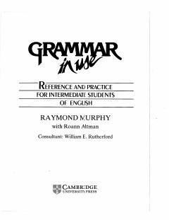

GIIngliz tili grammatikasini o'rganish uchun amaliy va mashhur qo'llanma.
Ushbu kitob ingliz tilini o'rganuvchilar uchun gramatik qoidalarni amaliy mashqlar yordamida tushuntiradi. Raymond Murphy tomonidan yozilgan ushbu qo'llanma o'rta darajadagi o'quvchilar uchun mo'ljallangan bo'lib, zamonaviy va tushunarli uslubda tuzilgan.